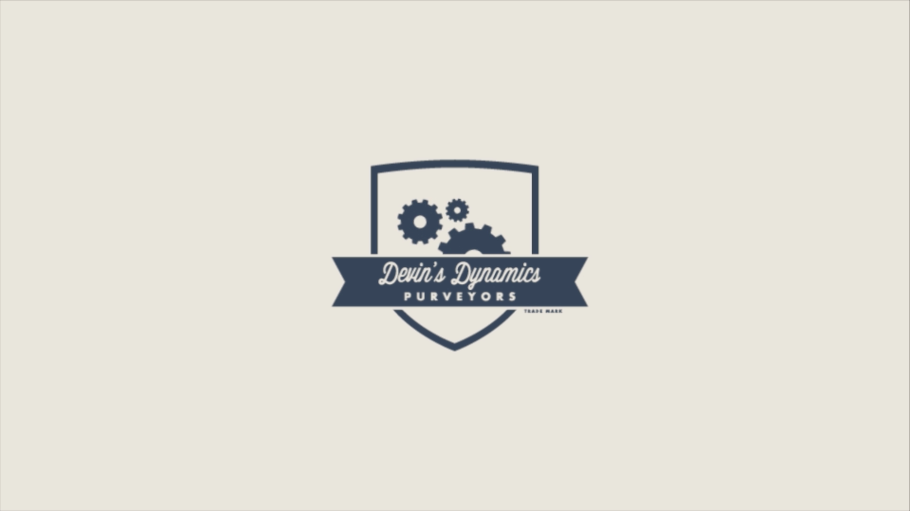
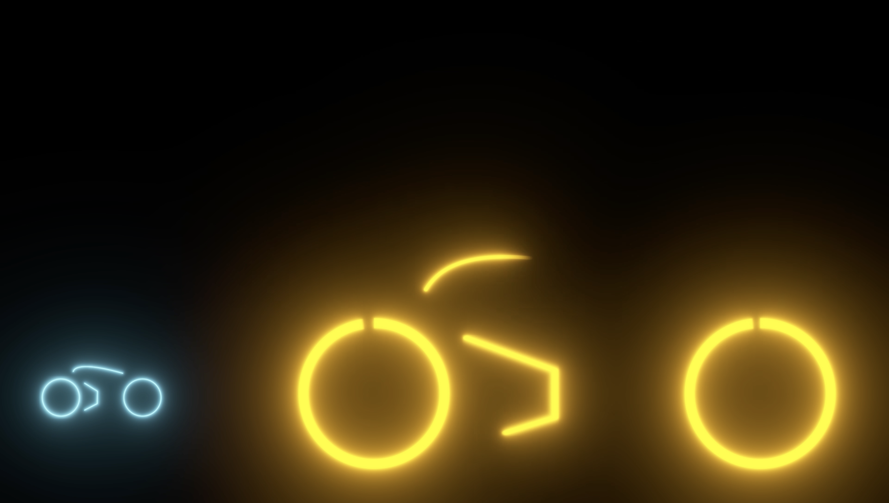

Frame 01 // Typography
Spatial letterform composition and kinetic momentum
 Index
Index

Animation & Kinetic Direction · 2026
A curated compilation of motion graphics exploring brand identity animation, typography in space, and rhythmic visual pacing. Every transition is timed to reinforce narrative momentum and tactile energy.
Created in Adobe After Effects and Illustrator, focusing on spatial easing curves, kinetic type systems, morphing brand marks, and audio-reactive pacing.

Spatial letterform composition and kinetic momentum

Vector morphing and rhythmic brand lockups